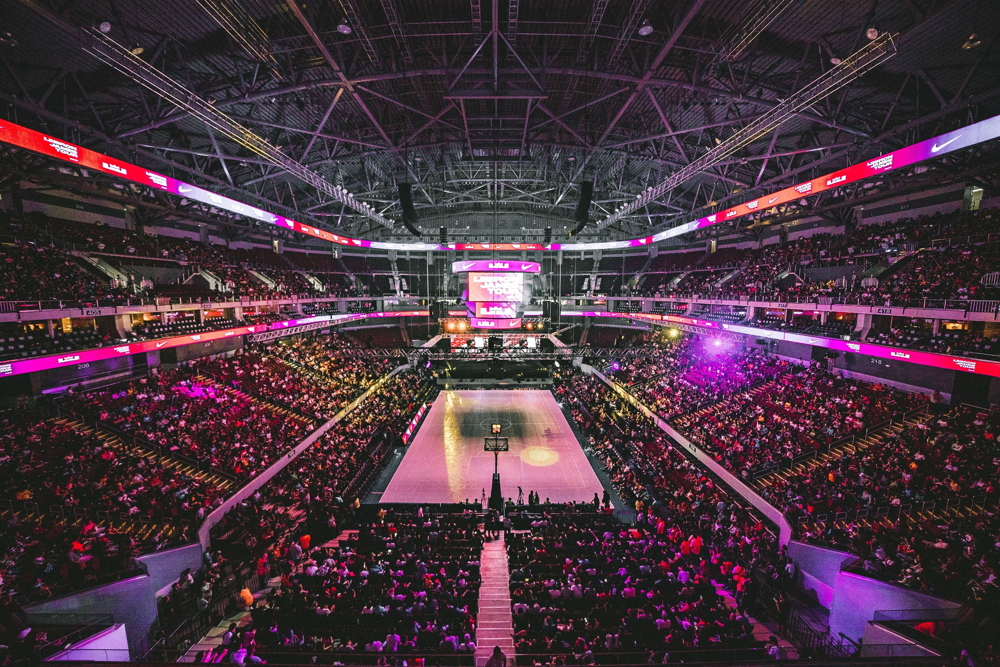
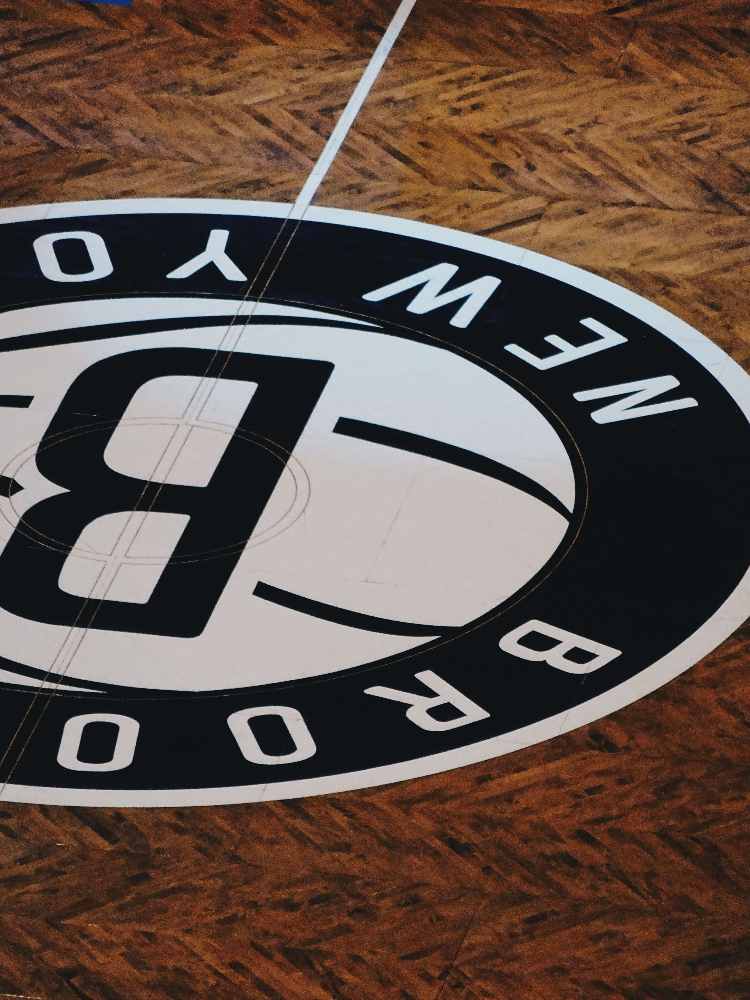
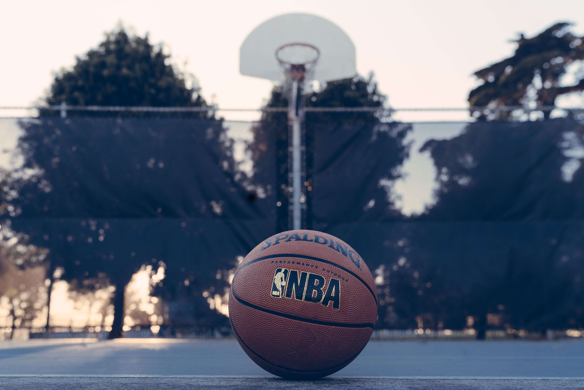
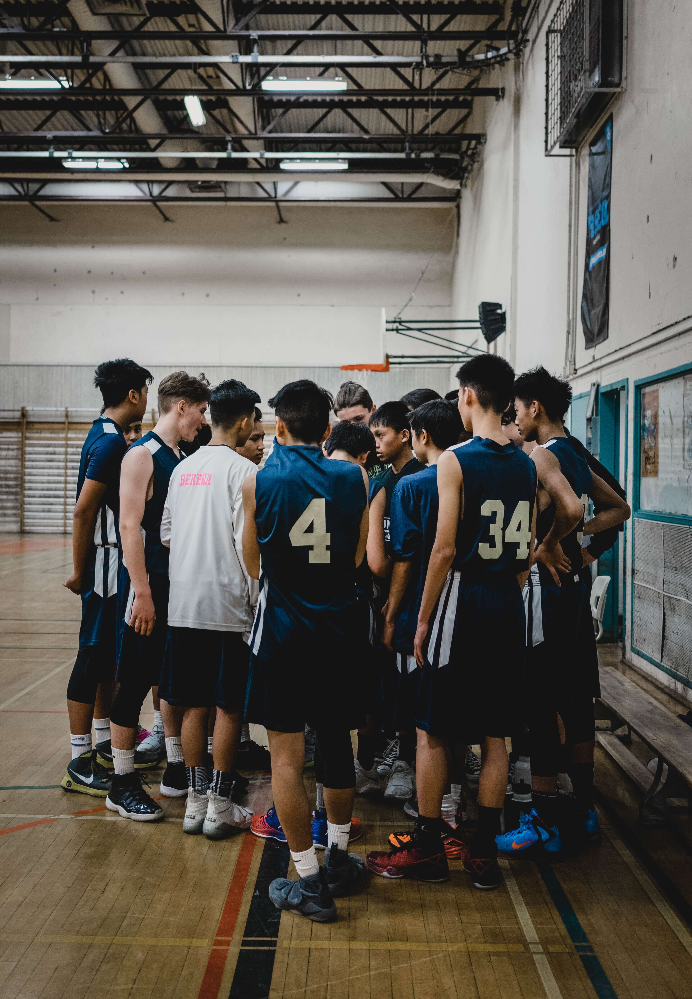

Who won the 2022 NBA draft?

Kyrie Irving's top 6 free agency destinations

How to instantly improve your jumpshot
About Us

As a teenager, I began to be instantly interested in the National Basketball Association. Stephen Curry was destroying opposing offenses with his insane ball handling and unprecedented shooting ability. My friends and I began to have lively debates on which player was better than the other, and my passion continued to grow. We would watch analytical videos, play video games, and play on the blacktop to satiate our obsession. This site is for people like me and you! Enjoy the latest news, stats, and content catered specifically to you!